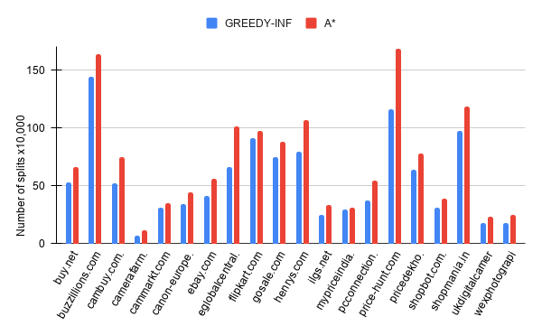
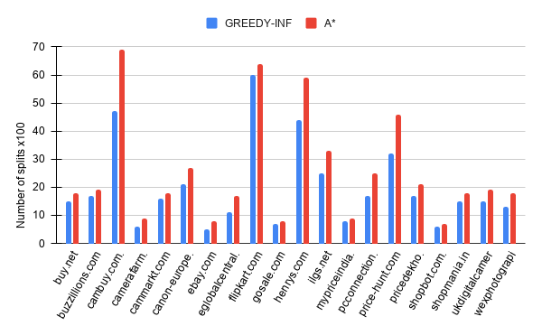

The Smallest Extraction Problem (SEP) is optimization problem for finding the grammar of a family that is able to describe a set of Web pages and contextually extract data from them.
In this website we present the dataset, the results, and the logs of the experiments presented in The Smallest Extraction Problem paper.
The following logs are automatically generated in the form of web pages. HERE is an example of a landmark-tree: L(eft), I(nner), and R(ight) are used to indicate the path of each landmark in the tree. The extracted values are presented in tabular form as shown HERE.
SWDE is a rather consolidated dataset progressively adopted as a reference by several Web data extraction systems. It was sourced from 80 websites divided into 8 domains for a total of about 124k pages.
The expanded version of the SWDE dataset includes additional ground-truth for 272 additional attributes from 21 sites of 3 SWDE domains (Movie,NBA,University).
Alaska is a recent benchmark targeting Web data integration tasks. We adapted the benchmark because it includes attributes of a remarkable variety.
The Alaska benchmark includes a dataset of Web pages about e-commerce products with a manually curated ground truth made of linkages (pair of pages referring to the same real-world entity) and schema matches (pair of attributes from distinct sites with matching semantics). Unfortunately, it does not include a ground truth specifically designed for Web data extraction, as the benchmark aims at evaluating the integration of the extracted data rather than their extraction from the HTML source of the pages.
We derived our Web data extraction ground truth by looking for the occurrences of attribute values in the HTML source code of the pages. We selected only the attributes that according to the Alaska benchmark ground truth are offered by several pages across distinct sites. Since the results of the integration is manually curated, and the data are redundantly offered by multiple sources, we build our Web data extraction ground truth based on the assumption that these correctly integrated redundant data are correctly extracted, as well.
The following charts show our precision and recall on the SWDE dataset.
The following charts show our precision, recall, and number of splits on the Alaska Benchmark dataset.
The following charts show the number of split operation performed on the Alaska Benchamark. The former shows the total number of split operation on the whole training set and the latter group toghether splits on with the same path (w.r.t the landmark-tree).


The following charts show the differences between the number of splits operated by the A* and Greedy algorithms versus the size of the regions involved by the split, the inpact of the k paramether in the search space for solving the k-SEP, and the average results obtained with the A* and Greedy algorithms with a growing number of training pages.